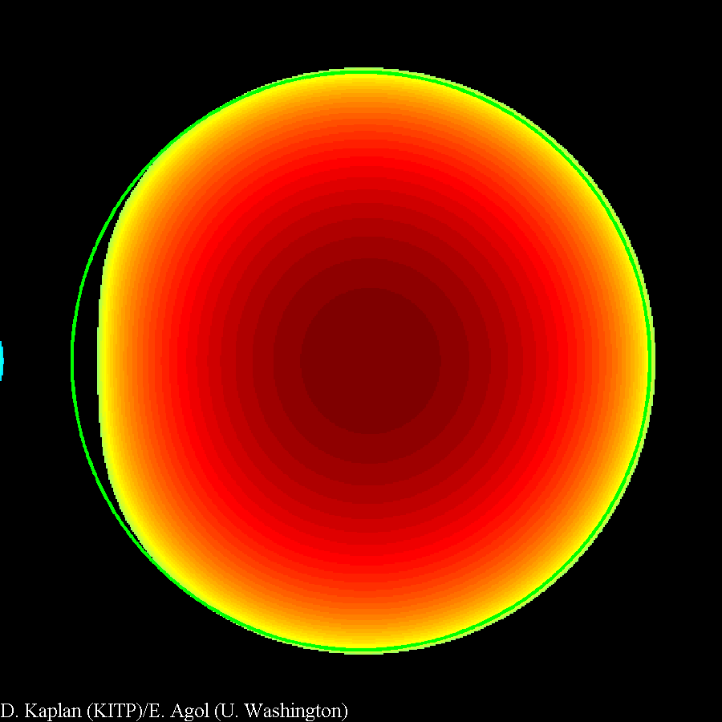
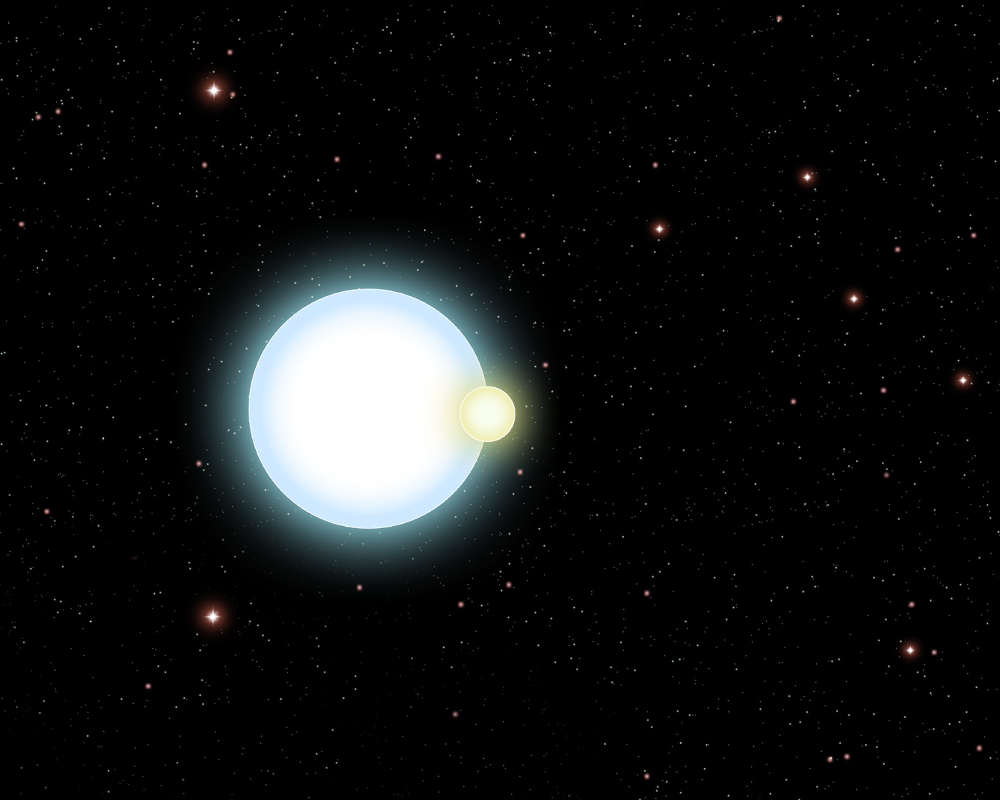

|  | This movie
shows an exaggeration of what happens when the smaller
white dwarf passes in front of the larger one. Not only is some of
the light blocked, but the smaller white dwarf also bends the light
around it, distorting and magnifying the larger white dwarf. The
magnification here has been increased by a factor of 10 compared to
reality to make it more visible, and the green circle shows the
original size of the white dwarf before magnification. mp4 | avi |
|  | See the press
release |